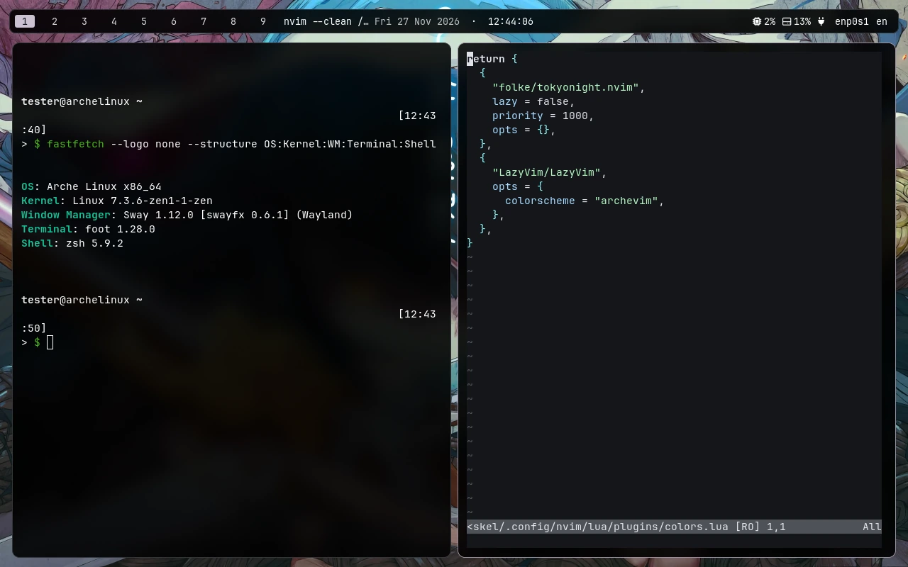

archelinux
A rolling-release Arch-based workstation with a lightweight tiling desktop.



Latest news
Release archivearchelinux 2026.11.23 (original installer)
The signed 2.0.0 image is available for x86_64. The guided installer offers SwayFX, optional LUKS encryption, and a console-only setup.